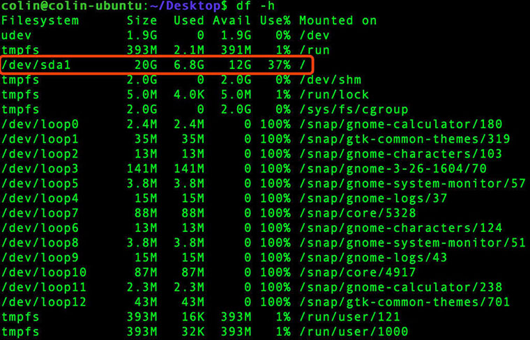

系统维护
1. 日期时间
| 命令 |
作用 |
date [-options] [-format] |
查看系统时间 |
cal [-options] |
查看系统日历 -y显示当年日历 |
$ date
$ cal -y
服务器时间校准
$ cp /usr/share/zoneinfo/Asia/Shanghai /etc/localtime
2. 磁盘管理
| 命令 |
作用 |
df [-options] [FILE] |
显示磁盘容量、已用空间、剩余空间、使用例等 |
du [-options] [FILE] |
显示目录下文件大小。 |
2.1 df命令
-h以人性化方式显示文件尺寸df(disk free)命令用于检测文件系统的磁盘空间占用和空余情况，可以显示所有文件系统对节点和磁盘块的使用情况df命令结果中挂载点为为根目录('/')的记录表示系统磁盘使用情况
| options |
含义 |
-h |
以人性化方式显示文件尺寸 |
-a |
显示所有文件系统的磁盘使用情况 |
-m |
以1024字节为单位显示 |
-t |
显示各指定文件系统的磁盘空间使用情况 |
-T |
显示文件系统 |
$ df -h

2.1 du命令
du(disk usage)命令用于统计目录或文件所占磁盘空间的大小，该命令的执行结果与df类似，du更侧重于磁盘的使用状况du命令不指定FILE，默认为当前目录。结果中最后一条记录.表示当前目录整体尺寸
| options |
含义 |
-a |
递归显示指定目录中各文件和子目录中文件占用的数据块 |
-s |
显示指定文件或目录占用的数据块 |
-b |
以字节为单位显示磁盘占用情况 |
-l |
计算所有文件大小，对硬链接文件计算多次 |
$ df -h
$ du -h Desktop
3. 进程管理
| 命令 |
作用 |
ps [options] |
查看进程信息。 |
top [-options] |
动态显示进程有序详细信息。类似Windows进程排序列表 |
kill [-signal] pid |
终止进程 |
1) ps命令
- ps命令options前不使用 "
-"
ps默认只显示 当前用户 终端启动的进程
| options |
含义 |
u |
进程详细信息 |
a |
所有用户 终端启动的进程 |
x |
所有进程 包含非终端启动的进程 |
-w |
显示加宽，以便显示更多的信息 |
-r |
只显示正在运行的进程 |
$ ps
$ ps au
2) top命令
top命令用来动态显示运行中的进程。top命令能够在运行后，在指定的时间间隔更新显示信息。可以在使用top命令时加上-d来指定显示信息更新的时间间隔。
在top命令执行后，可以按下按键得到对显示的结果进行排序：
| 按键 |
含义 |
| M |
根据内存使用量来排序 |
| P |
根据CPU占有率来排序 |
| T |
根据进程运行时间的长短来排序 |
| U |
可以根据后面输入的用户名来筛选进程 |
| K |
可以根据后面输入的PID来杀死进程。 |
| q |
退出 |
| h |
获得帮助 |
3) kill命令
- 信号值从0到15，其中9为绝对终止，可以处理一般信号无法终止的进程
- 出于安全考虑，我们一般只管理当前用户开启的进程。如果中止root用户的进程可能导致系统崩溃
- 一般只使用终端命令方式管理Linux，故而一般只关注终端启动的进程
$ kill -9 1278
4. 运行级别
Linux运行级别类似于windows中的安全模式等不同的启动模式。
常用目录速查表:
| 运行级别 |
含义 |
| 0 |
关机 |
| 1 |
单用户 |
| 2 |
没有网络服务的多用户状态 |
| 3 |
有网络服务的多用户状态 |
| 4 |
系统未使用保留给用户 |
| 5 |
图形界面 |
| 6 |
系统重启 |
- 最常用的运行级别是3和5，可以通过修改/etc/inittab文件来修改系统运行级别。
init [运行级别] 马上进入指定运行级别，单次有效- 运行级别设置不当可以在启动时修改编辑启动项进入单用户模式，修改运行级别然后重启即可。